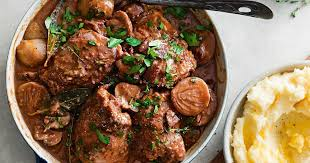

Explore France's Top 5 Culinary Delights
Indulge in the best of French cuisine with our top 5 recommendations. Click on each dish to discover more!




Indulge in the best of French cuisine with our top 5 recommendations. Click on each dish to discover more!